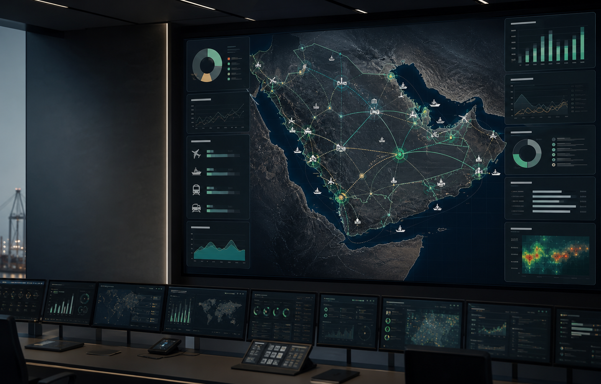

Enterprise logistics intelligence
Logistics Intelligence for National-Scale Operations
shahnmove helps national champions and government-backed enterprises gain visibility across complex logistics networks, identify bottlenecks and make better investment and operational decisions with AI-powered analytics.
We combine logistics advisory, data intelligence and implementation support to turn fragmented logistics operations into a manageable system.
National logistics view
Network visibility layer
Built for strategic operators
National champions Government-backed enterprises Infrastructure operators Logistics and industrial groupsThe problem
Logistics networks are growing faster than visibility
Large logistics ecosystems often operate across disconnected warehouses, transport assets, contractors, ports, airports and logistics zones. Data is fragmented, bottlenecks are discovered too late and management teams do not always have a clear view of where capacity is available or where capital should be allocated next.
- Fragmented data across logistics assets and contractors
- Limited visibility into utilization, delays and service levels
- Weak domestic logistics indicators for planning and investment
- AI initiatives that fail because the underlying processes are not structured
- Management reports without a real system-level view
What shahnmove does
From fragmented logistics data to decision intelligence
shahnmove creates a unified intelligence layer across logistics infrastructure, operations and planning.
Map the system
Structure data about warehouses, hubs, routes, logistics zones, ports, airports, contractors and operational dependencies.
Reveal bottlenecks
Identify capacity gaps, underused assets, recurring delays, duplication and weak service levels.
Guide decisions
Use AI-powered analytics to support investment planning, infrastructure upgrades, network redesign and operational prioritization.
Support transformation
Turn insights into a practical roadmap with advisory, process engineering and implementation support.
Saudi ecosystem
Designed with the Saudi logistics ecosystem in mind
Saudi Arabia's logistics transformation is shaped by national strategies, infrastructure investment, customs modernization, port and airport development, special economic zones and the growth of national champions.
shahnmove is built for organizations operating across this ecosystem and working in coordination with stakeholders such as customs authorities, transport regulators, port and aviation authorities, investment bodies and government-backed infrastructure programs.
These organizations are mentioned as part of the broader Saudi logistics ecosystem. This does not imply existing partnerships or endorsements.
Pilot program
Start with a focused logistics intelligence pilot
The best way to begin is a focused pilot around one logistics network, region, warehouse group, logistics zone or infrastructure challenge.
The goal is to create visibility, identify improvement opportunities and build a practical roadmap for scale.
Duration
8 to 12 weeks
Pilot deliverables
- Current-state logistics map
- Data and visibility assessment
- Bottleneck and capacity analysis
- Executive dashboard prototype
- 3 to 5 prioritized improvement opportunities
- Estimated ROI and implementation complexity
- Transformation roadmap for the next phase
Discuss a pilot